3D data
Explore a tissue volume: colour cells by type or gene, orbit around it, reveal structures in depth and analyse selected regions.
A 3D dataset places every cell at its imported x, y and z position. Instead of looking at a single flat tissue section, the complete cell cloud can be orbited, inspected from different directions and cut into, to reveal structures hidden behind other cells. These interactions change only the view, never the imported coordinates.
Cell colouring, categorical focus and most plots work as described for 2D data: tabs can colour the cells by cell type, niche, gene expression, pathway score or another measurement.
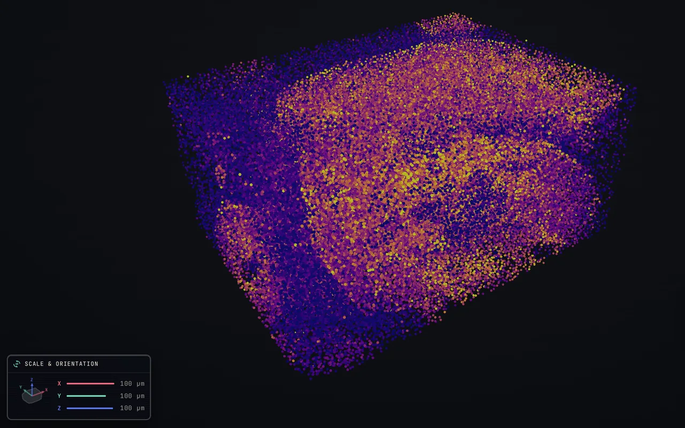
The tabs organise the imported annotations, measurements and spatial functions into different ways of exploring the dataset.
Every tab works with the same cells at their original x, y and z positions. Some colour the volume by an annotation, gene or computed value, while others open plots and analyses or control which part of the volume is visible. Switching tabs changes the view and the scientific question, never the imported data.
The figure below shows all tabs that may occur for a 3D dataset. Most are shared with the 2D viewer and are described under Explore the data through tabs. The buttons below focus on the two tabs specific to 3D: Slab, for restricting and analysing the visible volume, and Sections, for creating parallel slices through it.
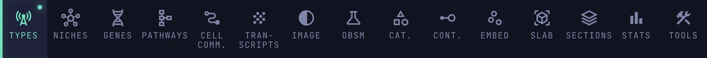
Slab
ViewSelection
Appears for every 3D dataset.
The Selection shape at the top of the tab decides how the volume is restricted. Pick a shape below to read about it; Analysis covers what applies to either.
The box
Cut the volume in two ways. Move the min and max sliders for X, Y and Z, or drag the corresponding coloured face of the box directly in the 3D view. Both controls change the same limits and update each other.
Cells outside the box are hidden, and the selected range is shown below the sliders.
Reset X, Reset Y and Reset Z restore one axis; Reset all slabs restores the complete volume.
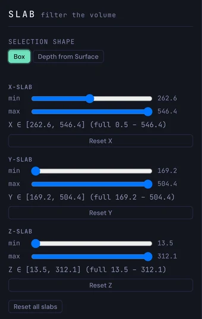
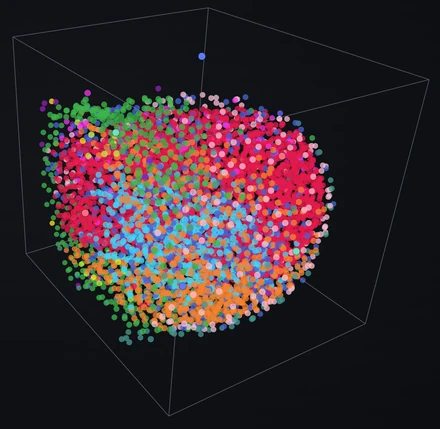
The slab filters the view.
Once the volume is restricted with Slab, the same subset remains visible when you switch tabs. Each tab recolours the cells inside the slab, while cells outside it stay hidden.
It does not filter the statistics.
Restricting the volume does not automatically restrict calculations. To analyse the slab, choose Analyze active volume. In Categorical relationships, select Current visible cells instead of All cells.
From the surface inwards
Measure depth. Choose Depth from Surface under Selection shape. PointillViz estimates the outer surface of the tissue once for the dataset, which takes a moment, and then the depth of every cell below it, in µm. Maximum depth gives the deepest cell.
The estimated surface is drawn as a thin grid around the cells. It is only a guide; it does not hide anything.
Keep a layer
Outer layer. Lower the max slider: only the cells next to the surface remain, here those within about 12 µm. Cells outside the chosen depths are hidden. Lowering Cell Size in the Style panel makes it easier to see that only the outermost layer is left.
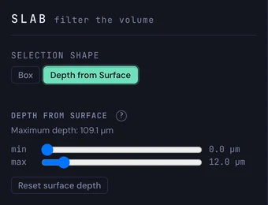
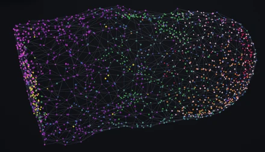
Interior. Raise the min slider instead to hide the outer layer and keep the core, here from about 50 µm inwards.
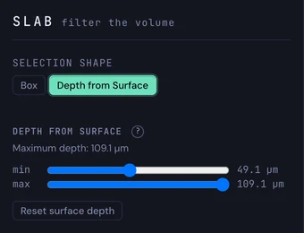
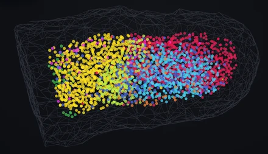
The depth ruler
Drag the ruler. The ruler at the bottom of the view runs from Surface to Interior and shows the same range. Drag either handle, or focus a handle and nudge it with the arrow keys; the sliders follow.
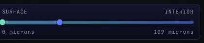
Reset and switch
Reset surface depth restores the full range. Cells without a valid depth are hidden in this mode. Box and Depth from Surface are alternatives: only the selected shape restricts the volume.
Analysis works on the cells inside the current slab, whichever shape defines it.
The region summary
Analyze active volume. The button is available once the volume is restricted. It opens the region summary for the cells inside the current box or depth range, like a finished Lasso selection (see Analysis under Lasso below).
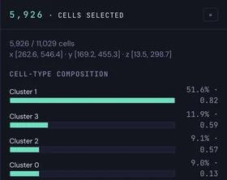
A second region
A comparison needs two regions. Region A comes from the Slab tab, and region B is set with the same controls.
1. Set region A. Restrict the volume with the sliders, the box faces or Depth from Surface, then press Analyze active volume. The summary of region A opens on the right.
2. Start region B. At the bottom of the summary, press Draw region B to compare. The slab opens to the whole volume; region A stays coloured, every other cell turns grey. The Slab tab now reads Setting Region B.
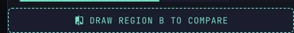
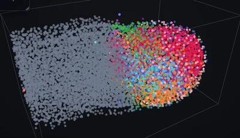
3. Choose region B and compare. Move the sliders or the box faces, or switch to Depth from Surface, until only the wanted cells remain; the count of shown cells follows. Then press Compare A with shown cells, which needs at least three cells. Cancel returns to region A. Region B may overlap region A.
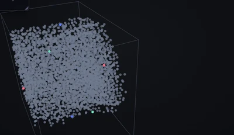
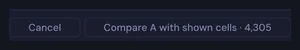
4. Read the comparison. Region comparison opens with the cell counts of A and B and one tab per kind of information, for example Cell types, Diff genes and Continuous; they work as in 2D (see Compare two regions under Lasso on the 2D data page). The slab controls are locked while it is open.
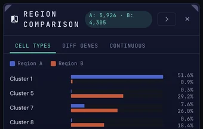
5. Finish. The × of the window ends the comparison and brings region A back, with its volume and its summary.
Sections
ViewAnalysis
Appears for every 3D dataset.
The tab cuts the volume into parallel sections along a plane that can be turned freely. Plane & settings covers the controls in the tab, Series window the window that opens with the series, for categorical or gene analysis.
The plane
Orient the plane. Azimuth, Elevation and Roll turn a section plane through the volume. The plane is drawn in the view as a dashed rectangle, with an arrow marked 1 → N that shows the direction in which the sections follow each other.
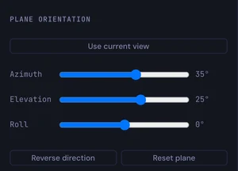
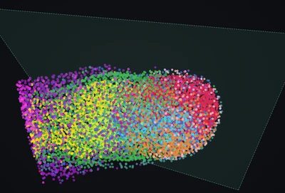
Use current view. Places the plane parallel to the screen, through the centre of the view. After Generate sections, the camera then tips so that the sections are seen edge-on, as a stack of lines.
Reverse direction. Turns the order around: the first section becomes the last and the arrow points the other way. The sections themselves are not mirrored, and an existing series is generated again.
Reset plane. Restores the default plane, through the middle of the volume and facing the camera.
The series
Count and thickness. Count is the number of parallel sections, from 2 to 100 (10 by default). Thickness is the depth of one section; it is suggested from the size of the volume and the count, and can be overwritten. Sections overlap when the thickness is larger than their spacing.
Status. The block under the buttons lists the plane and, after generating, the range, the spacing, the number of sections and the cells considered.
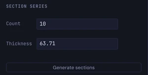
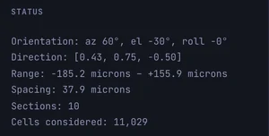
Generate the series
Generate sections. Cuts the volume into the series and opens the 3D Section Series window. Only cells that are currently shown take part, so a restricted Slab or hidden cell types also limit the series.
Browse the sections
Select a section. The window shows the selected section large, with its position along the direction, its thickness, its number of cells and the spacing.
Move through the series. Click a thumbnail, or press the left and right arrow keys to go from earlier to later sections. Everything follows together, as the figure shows. The × closes the window.
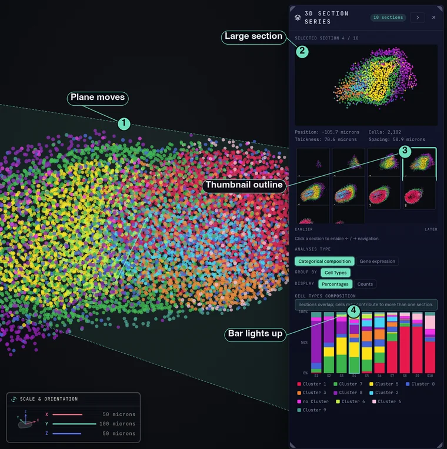
1 Plane. It moves through the volume in the viewer. 2 Large section. It changes to the selected section. 3 Thumbnail. It gets an outline. 4 Chart. The matching bar of the categorical chart lights up; in the gene chart it is the matching point.
Then choose the kind of analysis shown below the sections.
Composition across sections
Compare the groups. Categorical composition is shown first. Group by chooses the column: Cell Types and, where the dataset has them, niches or categories. Display switches between Percentages and Counts. Each bar is one section.
Hover or click a bar. Hovering a segment names its section and group with the cell count and share, and lights the same group in the large section and in the legend. Clicking a bar selects that section.
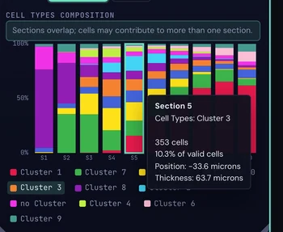
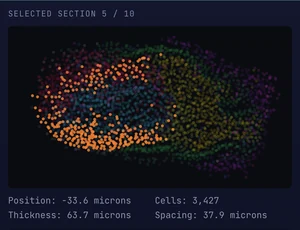
Gene expression across sections
Plot a gene. Press Gene expression under Analysis Type. It needs a gene chosen in Genes, Raw; the window then shows its name. Mean expression, Median expression and % expressing are toggles. Expression plots above the section axis and the share of expressing cells below it.
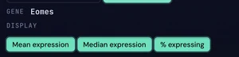
Show fewer metrics.
All three need not be shown: switch off one or two and the chart keeps the rest. With only one left, it appears as a bar chart instead of lines.
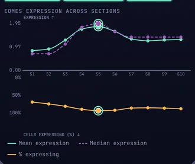
The toolbar contains actions that work across tabs and with the current colouring and focus. Most shared controls, including Lens, Gating, Theme, Capture and Export, work as described for the 2D toolbar.
Some controls remain specific to the flat view: Rotate and Gradient are available only in 2D, while images, boundaries and transcripts are not drawn over the 3D volume. Lasso is explained below because it offers an additional form of selection in 3D.
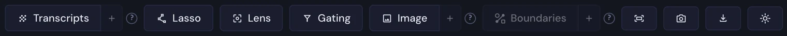
Lasso
Selection
Always available: press Lasso or P.
In a 3D dataset the shape menu has two levels: Projection draws a shape on the screen, 3D Object selects a volume inside the tissue.
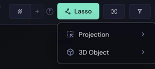
Choose a shape and draw
Pick the outline. Press Lasso, choose Projection, then Freehand, Rectangular or Circular Selection.
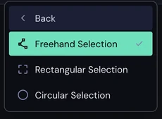
Drag directly on the view.
- Freehand: trace around the cells with the pointer.
- Rectangle: drag from one corner to the opposite one.
- Circle: drag from the centre outwards.
The view stays fixed while you draw.
What is inside
A column through the volume. The outline is flat, but it selects through the whole depth: every cell whose position on the screen lies inside it is chosen, in front and behind. Orbit the view afterwards to see it. The coloured cells form a column through the tissue, and the outline stays where it was drawn.
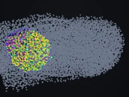
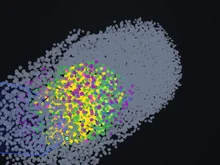
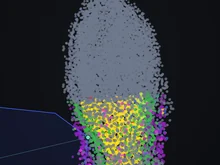
Cells hidden by the Slab are never selected.
Adjust the shape
Move, resize, reshape. Drag inside the shape to move it and its handles to resize it; on a freehand shape, drag the outline itself to reshape that stretch. The cell count updates when the button is released, and Escape during a drag undoes it.
Place a sphere
Pick and place. Press Lasso, choose 3D Object, then 3D Volume. Press where the sphere should sit and drag outwards to set its radius. Every cell inside is selected, at any depth. The sphere belongs to the tissue and keeps its place when the view is orbited.
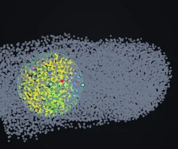
Move and resize
Move. Drag the centre dot, or the dot at the end of an axis line to move the sphere along X, Y or Z only.
Resize. Drag the radius dot on the outline.
Reshape the surface
Push or pull. Drag the surface itself, best near its edge: outwards makes a bulge and inwards a dent. Nearby pulls merge into one smooth surface that stays fixed to the tissue.
The sphere below was pulled out at the top and at the lower right and pushed in at the left, all inside the tissue; the same shape is seen from three sides.
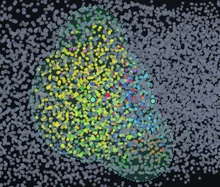
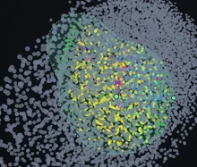
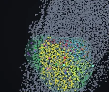
Read the region
Region panel. The selected cells keep their colours, every other cell turns grey, and the panel opens on the right with the number of cells, their ranges and the Cell-type composition: each type's share and its log2 enrichment against the dataset.
Top genes. Below it, Top genes lists the genes that differ most between the region and the other cells. log1p(CP10K) is the default; Raw shows the stored values.
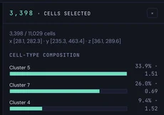
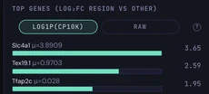
Close
The × of the panel, the Lasso button, P or Escape end the selection. In the menu, Escape first goes back one level.
Start region B
Draw region B to compare. The button at the bottom of the region panel freezes region A and closes the panel. A bar appears at the bottom of the view: Drawing Region B — Region A is frozen, with Compare regions and Cancel.
Draw it
Draw region B the same way as region A. Drag a second shape in Projection, or a second sphere in 3D Object. Region B is drawn in orange; region A stays outlined. The bar counts the cells of both, and B can be moved and reshaped until it is confirmed.
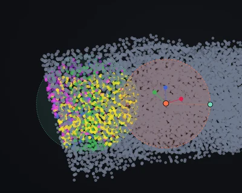
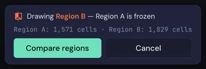
Confirm
Compare regions opens the comparison; the button needs at least one cell in region B. Cancel, or Escape, drops region B and brings region A back. Cmd/Ctrl+C copies region A and Cmd/Ctrl+V pastes it as region B, ready to move.
The comparison window
Region comparison opens with the cell counts of A and B and one tab per kind of plot. A is blue and B is orange throughout. Which tabs appear depends on the dataset. The × closes the window and brings region A back.
Cell types. One pair of bars per type: the share of region A and of region B, ordered by the largest difference.
Niches. The same for niche columns, with a menu for the niche resolution. Only shown if the dataset has niches.
Diff genes
Genes that differ. A Wilcoxon rank-sum test on log1p(CP10K), adjusted for many tests, ranks the genes by evidence; the bars give the fold change and the stars the significance. It runs when the tab is opened. Below the list, a volcano plot shows every gene: fold change across, significance upwards.
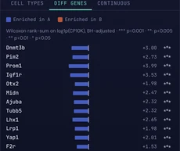
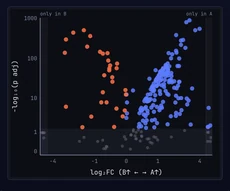
Other measures
Continuous. The mean of each continuous column, for A and for B.
Obsm. The mean of each channel of a dense matrix, for A and for B. Only shown if the dataset has one.
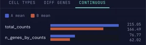